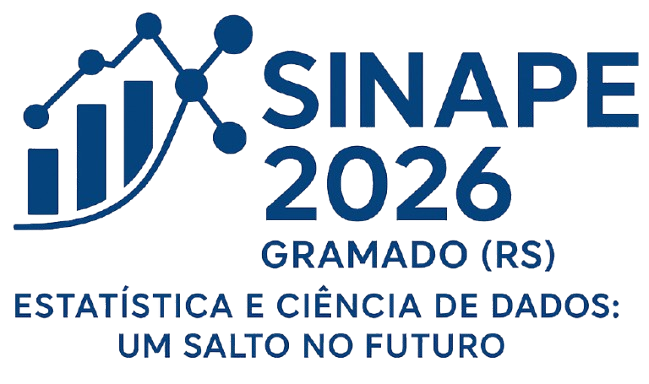
26º SINAPE — Gramado (RS) — Setembro de 2026
Objetivo: Comparar o desempenho de Random Forest, TabNet e TabR na classificação de dados SAR/PolSAR
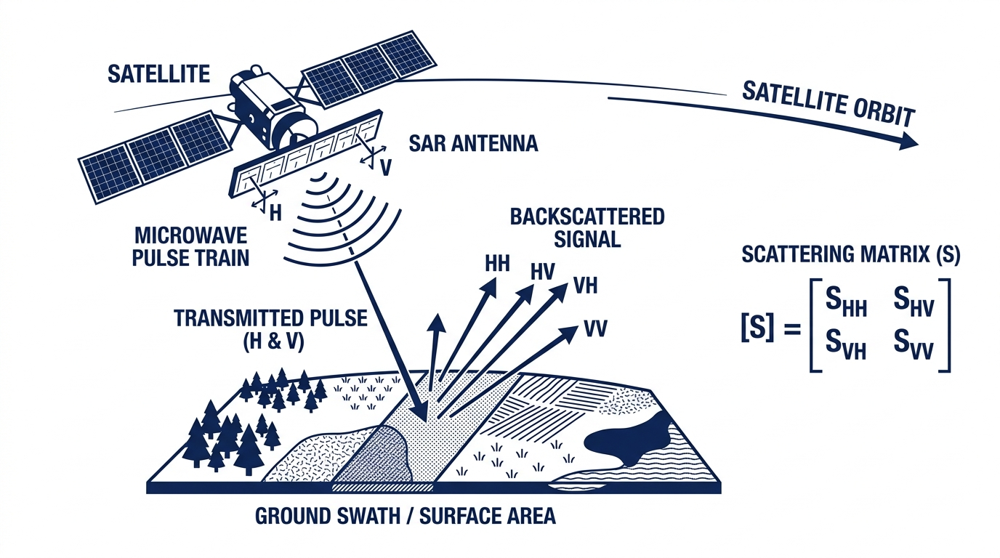
SAR (Synthetic Aperture Radar): sensor ativo que emite pulsos de micro-ondas e mede o sinal retroespalhado
Funciona dia e noite, independente de condições climáticas
Os retornos PolSAR multi-look são representados por uma matriz hermitiana definida positiva \(3 \times 3\):
\[ \mathbf{Z} = \begin{bmatrix} |Z_{HH}|^2 & Z_{HH-HV} & Z_{HH-VV} \\ Z_{HH-HV}^* & |Z_{HV}|^2 & Z_{HV-VV} \\ Z_{HH-VV}^* & Z_{HV-VV}^* & |Z_{VV}|^2 \end{bmatrix} \]
onde os produtos internos entre canais de polarização são:
\[ Z_{A-B} = \langle Z_A, Z_B \rangle = Z_A Z_B^*,\quad A,B \in \{HH, HV, VV\} \]
Variáveis utilizadas: Vetor de intensidades \(\mathbf{I}(i) = [I_1(i), I_2(i), I_3(i)]^\top \in \mathbb{R}^3_+\) correspondente aos canais \(HH\), \(HV\) e \(VV\) no pixel \(i\).
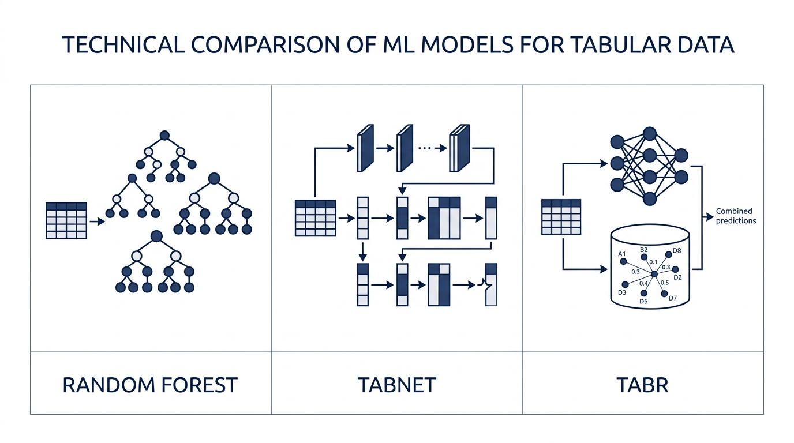
O Random Forest (Breiman, 2001) é um método de ensemble baseado em árvores de decisão:
\[ \hat{y}(\mathbf{x}) = \text{mode}\{h_b(\mathbf{x})\}_{b=1}^B \]
Vantagens:
onde:
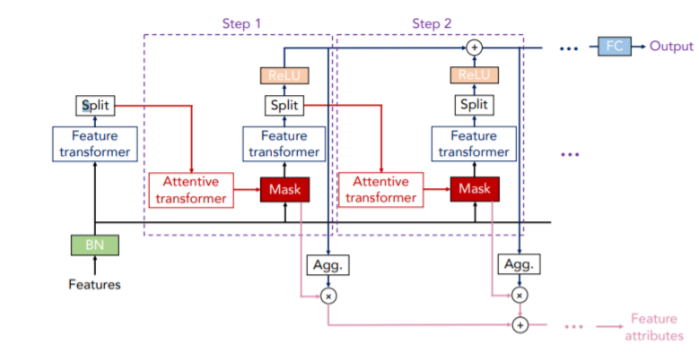
A máscara de atenção no passo \(j\) é:
\[ \mathbf{M}[j] = \text{sparsemax}\left(\mathbf{P}[j-1] \cdot h_j(\mathbf{a}[j-1])\right) \]
onde:
\[ \mathbf{P}[j] = \prod_{k=1}^{j}\left(\gamma - \mathbf{M}[k]\right) \]
com \(\mathbf{P}[0] = \mathbf{1}_p\) (vetor de uns, sem penalização no início), e \(k\) indexando os passos já percorridos
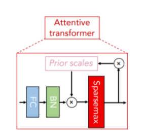
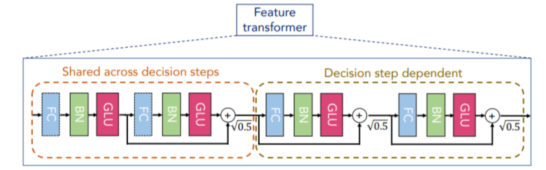
O Feature Transformer processa os dados selecionados em cada passo de decisão:
Cada bloco consiste em:
\[ \text{FC} \rightarrow \text{BN} \rightarrow \text{GLU} \]
onde GLU (Gated Linear Unit) é:
\[ \text{GLU}(\mathbf{x}) = \sigma(\mathbf{W}_1 \mathbf{x} + \mathbf{b}_1) \odot (\mathbf{W}_2 \mathbf{x} + \mathbf{b}_2) \]
A saída do passo \(j\) é dividida: parte vai para a decisão e parte para as informações de atenção do passo seguinte.
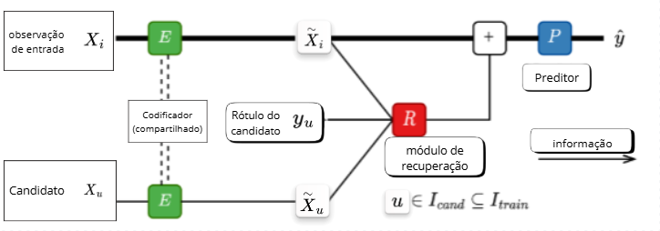
O TabR pertence à classe de retrieval-augmented deep learning models, combinando:
Dada uma observação \(\mathbf{x}_i \in \mathbb{R}^p\) (vetor de \(p\) covariáveis do pixel \(i\) a classificar), o TabR opera em três etapas:
1. Codificação (Encoder \(E\)):
\[ \tilde{\mathbf{x}}_i = E(\mathbf{x}_i) \in \mathbb{R}^d \]
onde \(E(\cdot)\) é a rede neural codificadora (MLP) com parâmetros aprendíveis, e \(d\) é a dimensão do espaço latente de representação (\(d \ll p\) em geral)
2. Recuperação (Retrieval \(R\)):
Para cada candidato \(u \in I_{\text{cand}} \subseteq I_{\text{train}}\) — onde \(I_{\text{train}}\) é o conjunto de índices de todas as observações de treino e \(I_{\text{cand}}\) é um subconjunto candidato (pode ser todo \(I_{\text{train}}\)) — calcula-se a similaridade do cosseno entre as representações latentes:
\[ s(i,u) = \frac{\tilde{\mathbf{x}}_i^\top \tilde{\mathbf{x}}_u}{\|\tilde{\mathbf{x}}_i\| \cdot \|\tilde{\mathbf{x}}_u\|} \]
onde \(\tilde{\mathbf{x}}_i^\top \tilde{\mathbf{x}}_u\) é o produto interno entre os vetores latentes e \(\|\cdot\|\) denota a norma Euclidiana. O valor \(s(i,u) \in [-1, 1]\) mede o ângulo entre os vetores: quanto mais próximo de \(1\), mais similares as observações \(i\) e \(u\).
A informação de contexto recuperada, agregando os \(k\) vizinhos mais similares (\(\text{Top-}k\)), é:
\[ \mathbf{c}_i = \sum_{u \in \text{Top-}k} \alpha_u \cdot \phi(y_u) \]
onde \(\alpha_u \propto \exp(s(i,u)/\tau)\) são pesos de atenção softmax (com temperatura \(\tau > 0\)) normalizados sobre os \(k\) vizinhos; \(y_u \in \mathcal{Y}\) é o rótulo de classe do vizinho \(u\) no treino; e \(\phi: \mathcal{Y} \to \mathbb{R}^d\) é uma função de embedding que projeta o rótulo para o espaço latente
3. Predição (\(P\)):
\[ \hat{y}_i = P\left(\tilde{\mathbf{x}}_i + \mathbf{c}_i\right) \]
onde \(\hat{y}_i \in \mathcal{Y}\) é a classe predita; \(P(\cdot)\) é a rede preditora (MLP) que recebe a representação enriquecida pelo contexto \((\tilde{\mathbf{x}}_i + \mathbf{c}_i) \in \mathbb{R}^d\), combinando informação paramétrica (encoder) e não-paramétrica (vizinhos recuperados)
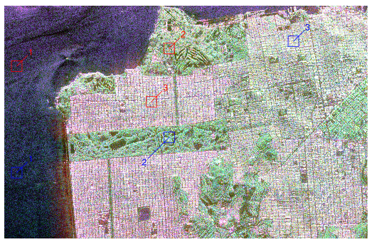
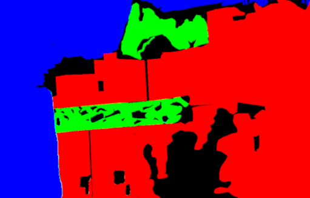
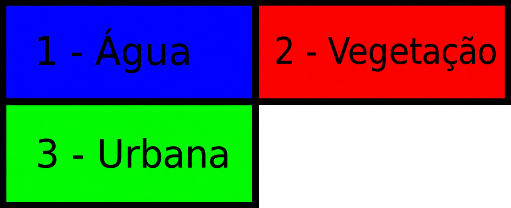
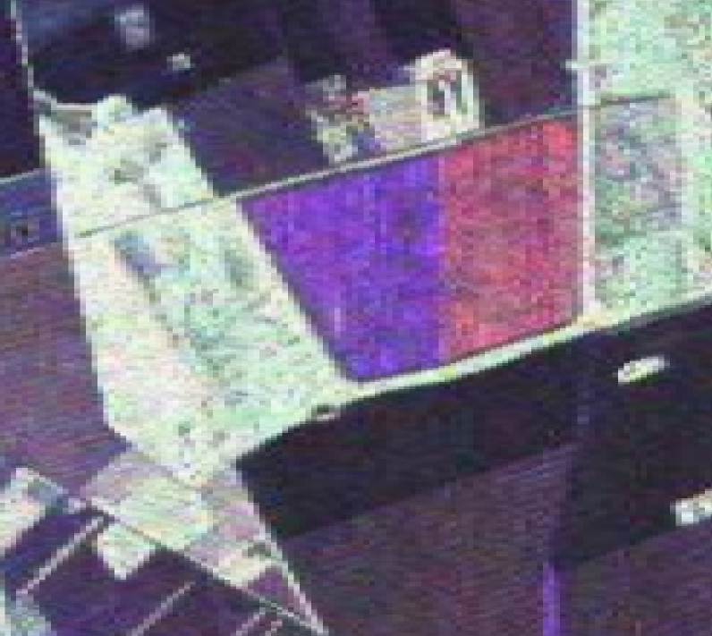
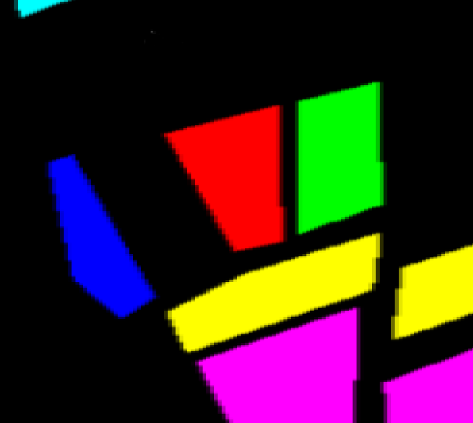
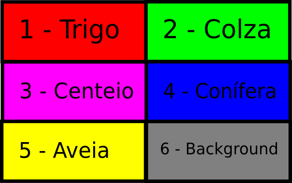
Os modelos foram avaliados com 2 métricas, adequadas ao contexto multiclasse:
| Predito A | Predito B | Predito C | |
|---|---|---|---|
| Real A | \(n_{11}\) | \(n_{12}\) | \(n_{13}\) |
| Real B | \(n_{21}\) | \(n_{22}\) | \(n_{23}\) |
| Real C | \(n_{31}\) | \(n_{32}\) | \(n_{33}\) |
| Métrica | Fórmula |
|---|---|
| Acurácia | \(\text{Acc} = \dfrac{\sum_{i=1}^{k} n_{ii}}{N}\) |
| Kappa | \(\kappa = \dfrac{p_o - p_e}{1 - p_e}\) |
em que \(n_{ii}\) é o número de amostras corretamente classificadas na classe \(i\), e \(N\) é o total de amostras, \(k\) é o número de classes, \(p_o\) é a proporção de acertos observada (equivalente à acurácia) e \(p_e\) é a concordância esperada ao acaso, calculada a partir da distribuição marginal das classes na matriz de confusão:
\[p_e = \sum_{i=1}^{k} \frac{(n_{i+} \times n_{+i})}{N^2}\]
em que \(n_{i+}\) é é a linha \(i\) e \(n_{+i}\) é a coluna \(j\).
| Modelo | Acurácia | Kappa |
|---|---|---|
| Random Forest | 0,8318 | 0,7477 |
| TabNet | 0,8471 | 0,7706 |
| TabR | 0,8588 | 0,7882 |
Destaque: O TabR obteve o melhor desempenho global em São Francisco, com acurácia de 85,88% e Kappa de 0,7882.
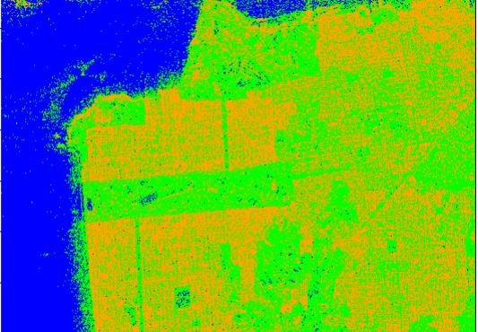
Melhor separação entre classes
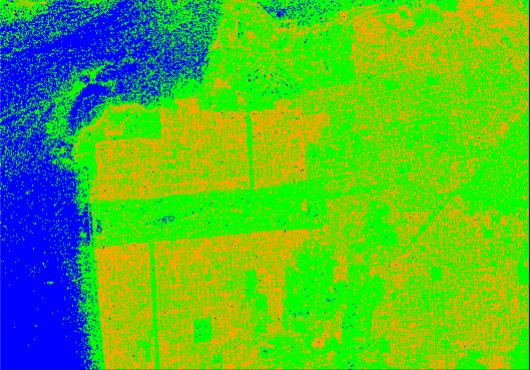
Suavização levemente maior
Maior fragmentação nas bordas
🔵 Água 🟢 Vegetação 🟠 Área Urbana
| Modelo | Acurácia | Kappa |
|---|---|---|
| TabR | 0,8649 | 0,8355 |
| Random Forest | 0,8712 | 0,8423 |
| TabNet | 0,8760 | 0,8489 |
Destaque: Para Foulum, o TabNet apresentou o melhor desempenho global, com acurácia de 87,60% e Kappa de 0,8489.
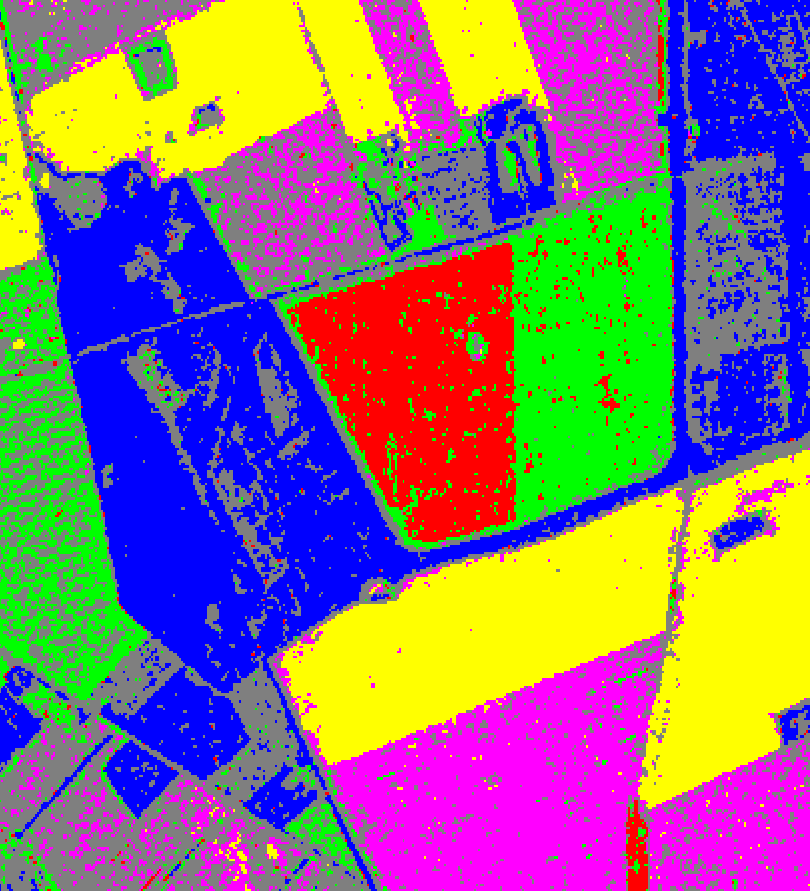
Boa definição de fronteiras
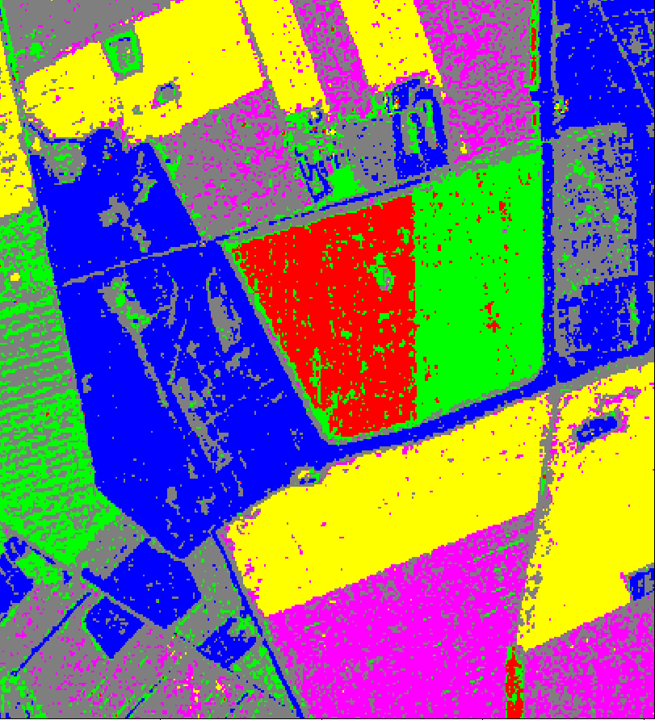
Melhor desempenho global
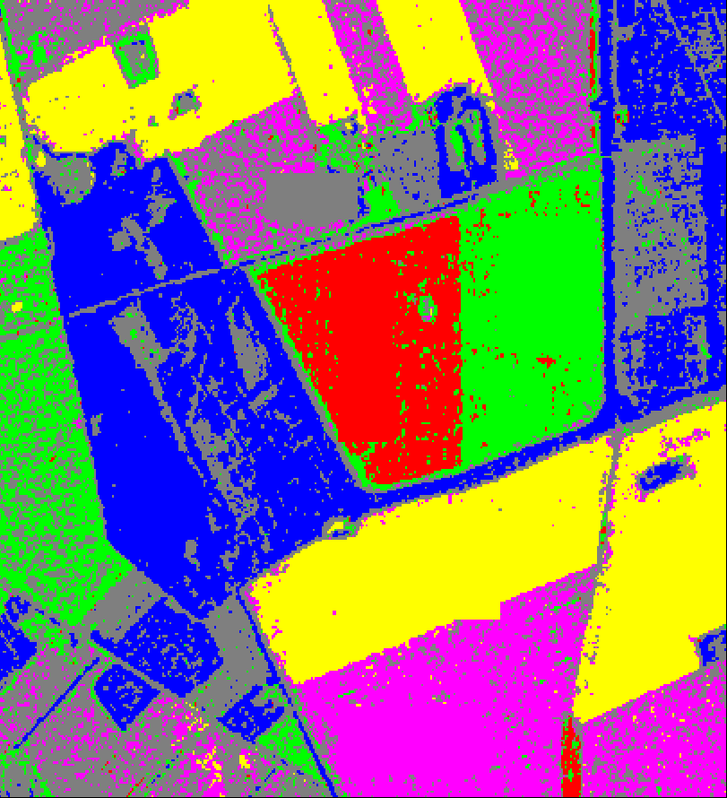
Maior presença de ruído
🔴 Trigo 🟢 Colza 🟣 Centeio 🔵 Conífera 🟡 Aveia ⚫ Background
| Modelo | Acc | Kappa |
|---|---|---|
| RF | 0,832 | 0,748 |
| TabNet | 0,847 | 0,771 |
| TabR | 0,859 | 0,788 |
| Modelo | Acc | Kappa |
|---|---|---|
| TabR | 0,865 | 0,836 |
| RF | 0,871 | 0,842 |
| TabNet | 0,876 | 0,849 |
Observação: A superioridade varia com a complexidade da cena — o que sugere que a escolha do modelo deve ser orientada pela aplicação.
Arik, S. O. and T. Pfister (2021). TabNet: Attentive Interpretable Tabular Learning. Proceedings of the AAAI Conference on Artificial Intelligence.
Belgiu, M. and L. Drăguţ (2016). Random forest in remote sensing: A review. ISPRS J. Photogrammetry and Remote Sensing, 114, 24–31.
Breiman, L. (2001). Random Forests. Machine Learning, 45(1), 5–32.
Ferreira, J. A., H. Coêlho, and A. D. Nascimento (2021). A family of divergence-based classifiers for PolSAR imagery. Int. J. Remote Sensing, 42(4), 1201–1229.
Gorishniy, Y., I. Rubachev, et al. (2023). TabR: Tabular deep learning meets nearest neighbors. arXiv preprint arXiv:2307.14338.
Goodfellow, I., Y. Bengio, and A. Courville (2016). Deep Learning. MIT Press.
Lee, J.-S. and E. Pottier (2017). Polarimetric Radar Imaging. CRC Press.
Moreira, A. et al. (2013). A tutorial on synthetic aperture radar. IEEE GRSM, 1(1), 6–43.
Mountrakis, G., J. Im, and C. Ogole (2011). SVMs in remote sensing: A review. ISPRS J., 66(3), 247–259.
Jodavid Ferreira
https://jodavid.github.io | jodavid.ferreira@ufpe.br
Slide produzido com quarto
Classificação de Dados SAR/PolSAR usando TabR e TabNet - 26º SINAPE — Gramado (RS)